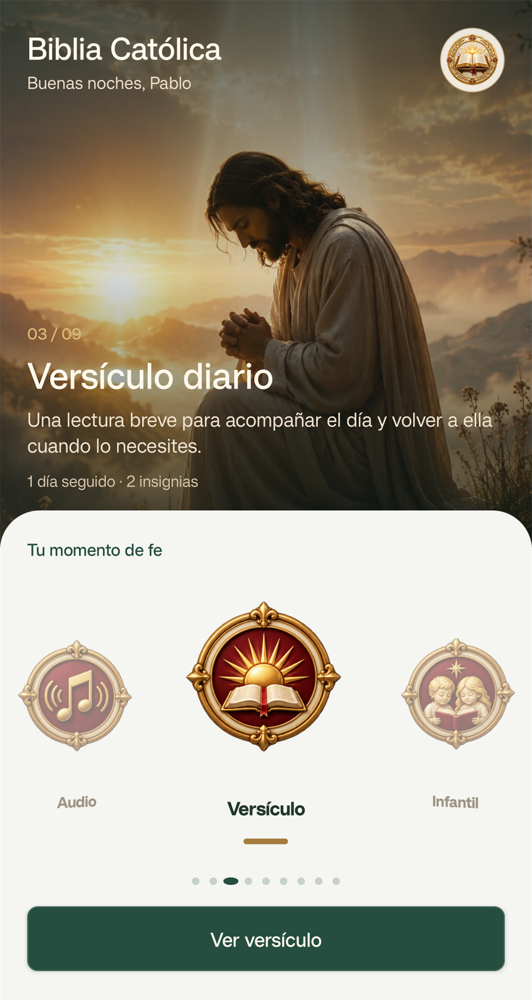
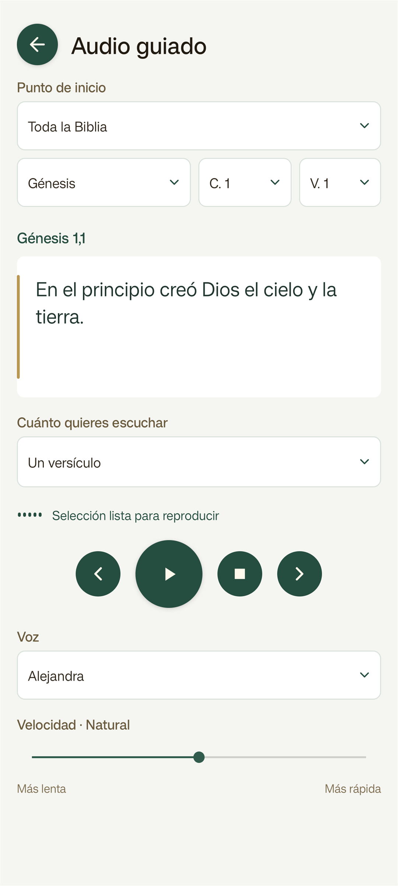
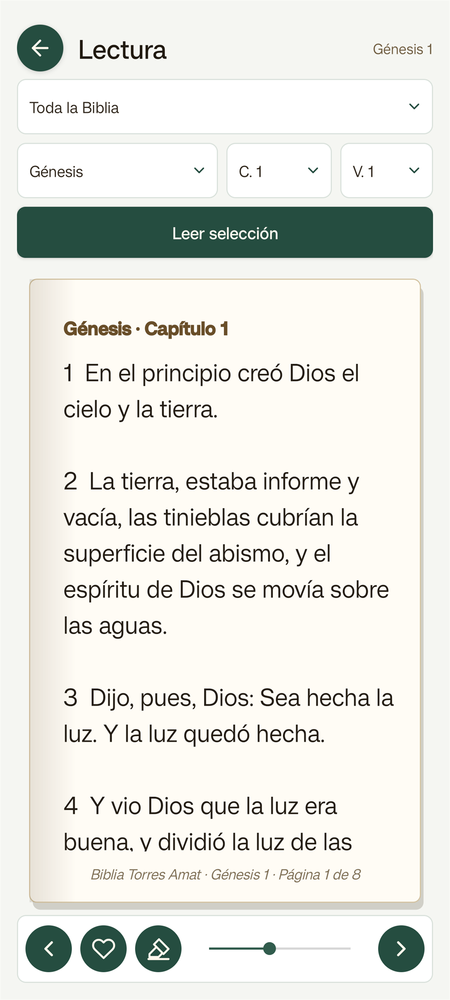
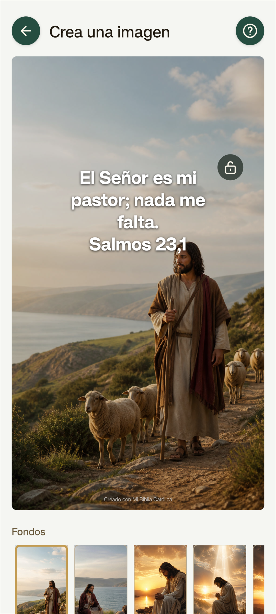

Mi Biblia Católica · Próximamente en Google Play
Lee, escucha y comparte
la Palabra.
Una experiencia completa y tranquila para recorrer los 73 libros de la Biblia Católica, retomar tu lectura y acompañar cada día con un versículo.

Versículo del día, racha, insignias y accesos rápidos a lectura, audio y contenido infantil.

Elige por dónde empezar, la voz y la velocidad; pausa o avanza con controles sencillos.

Busca un pasaje, ajusta el tamaño del texto y guarda o resalta los versículos que más te acompañen.

Combina un fondo con un versículo o una frase y prepara una imagen lista para guardar o compartir.
Manual de uso
Empieza en cuatro pasos.
No necesitas crear una cuenta. Al abrir la app, todo está organizado por momentos de uso para que llegues a lo que buscas sin menús complicados.
- 01
Elige tu momento
Desde Inicio puedes abrir el versículo diario, continuar tu lectura, entrar en Audio o visitar la sección Infantil. La racha y las insignias reflejan tu constancia.
- 02
Lee a tu ritmo
Selecciona testamento, libro, capítulo y versículo. Pulsa «Leer selección», navega entre páginas y usa el corazón o el marcador para guardar y resaltar.
- 03
Escucha de forma guiada
Escoge el punto de inicio y cuánto quieres escuchar. Después selecciona una voz, ajusta la velocidad y controla la reproducción desde la misma pantalla.
- 04
Crea y comparte
En el creador, elige un fondo, añade un versículo o una frase, mueve y ajusta el texto y guarda la imagen, compártela o úsala como fondo de pantalla.
También encontrarás
- Favoritos, resaltados y punto de lectura
- Santo Rosario y sección infantil
- Versículo diario, rachas e insignias
- Notificaciones opcionales
No se necesita una cuenta. El progreso, los favoritos y las preferencias se guardan localmente en tu dispositivo. Las imágenes se procesan en el teléfono y solo salen de él cuando decides guardarlas o compartirlas.
La app será gratuita con anuncios y ofrecerá una compra única opcional para eliminarlos.